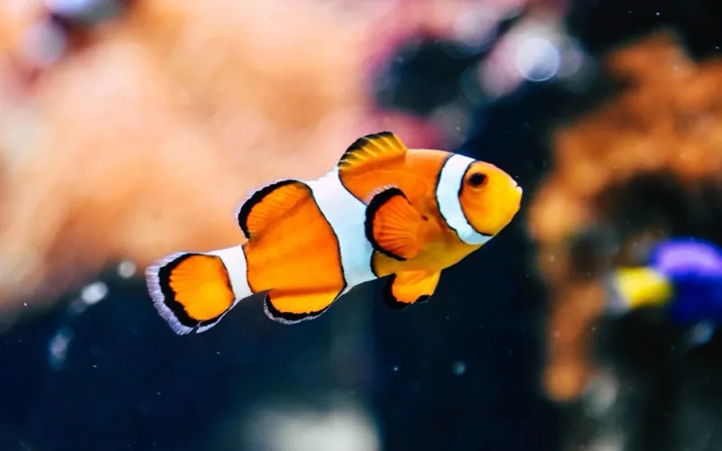
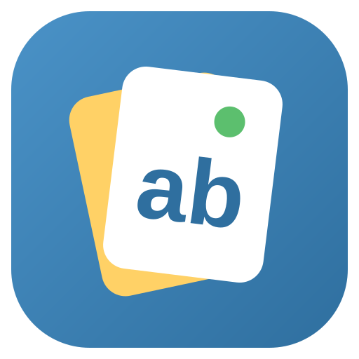
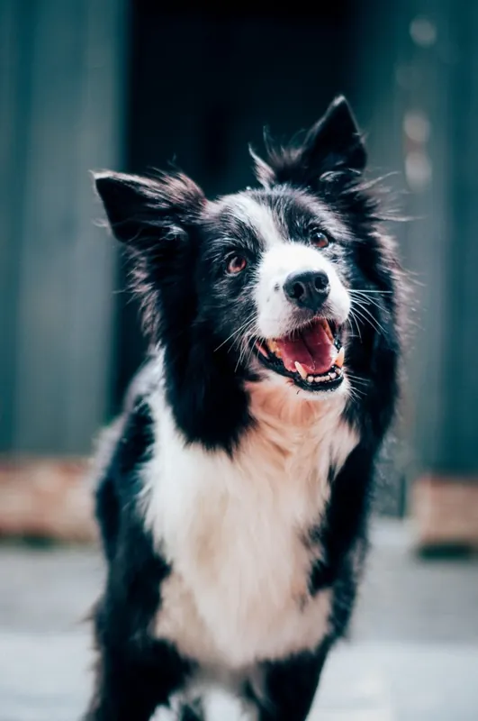
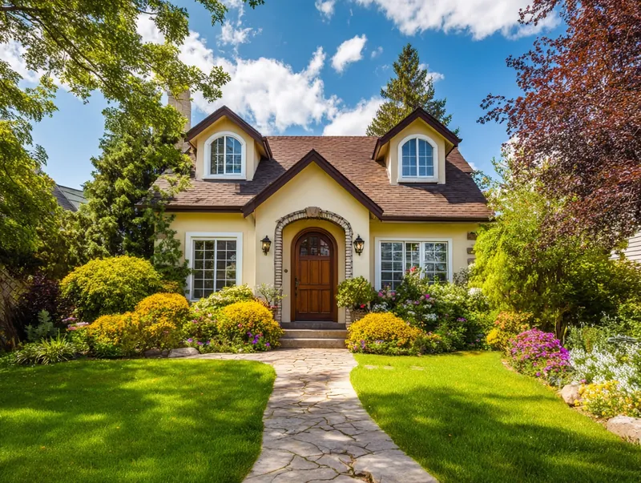
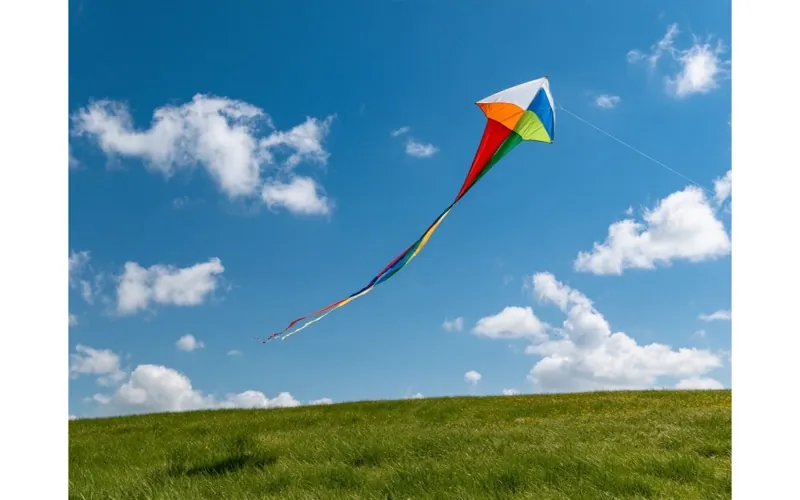
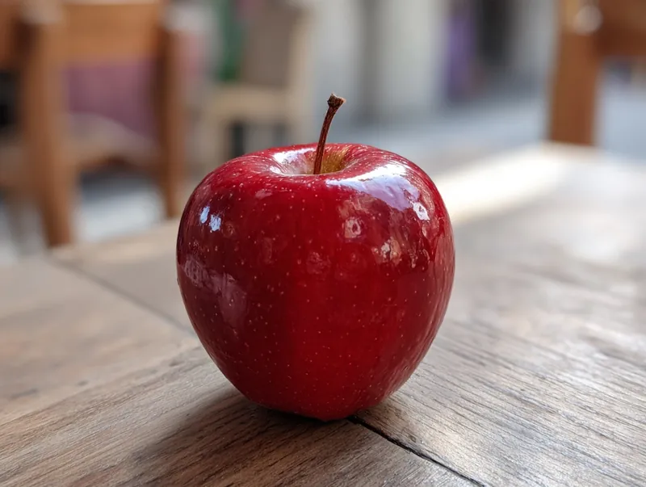
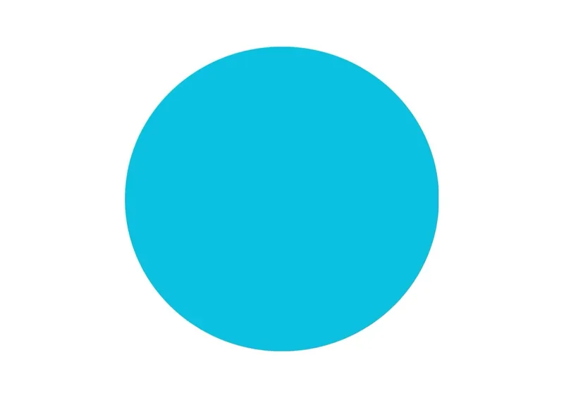
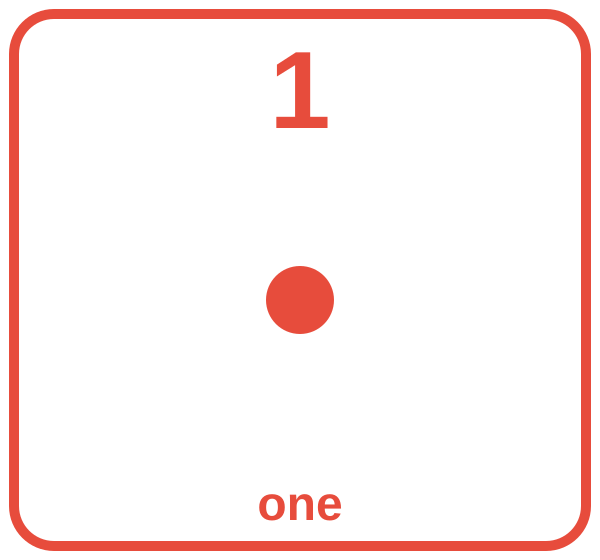

Sea Creatures My Garden Seasons
Seasons
 Weather
Weather

English flashcards, games and printables for your class
Choose a topic below. Each card shows a picture and its English word. Press the speaker button to hear the word, and Next to move on. Open Options on a topic to show Spanish words or example sentences. Finish a topic to earn a star. Teachers will find lesson plans, printable sheets and class games under For teachers.

Feelings
Parts of the House
Toys and Sports Professions City Modes of Transportation
Colours
Shapes Opposites
Opposites

Numbers 0 to 10 Days of the Week Months of the Year